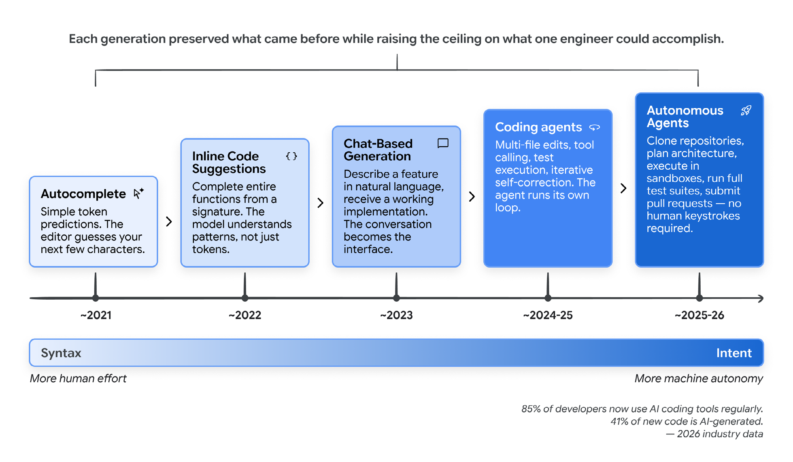
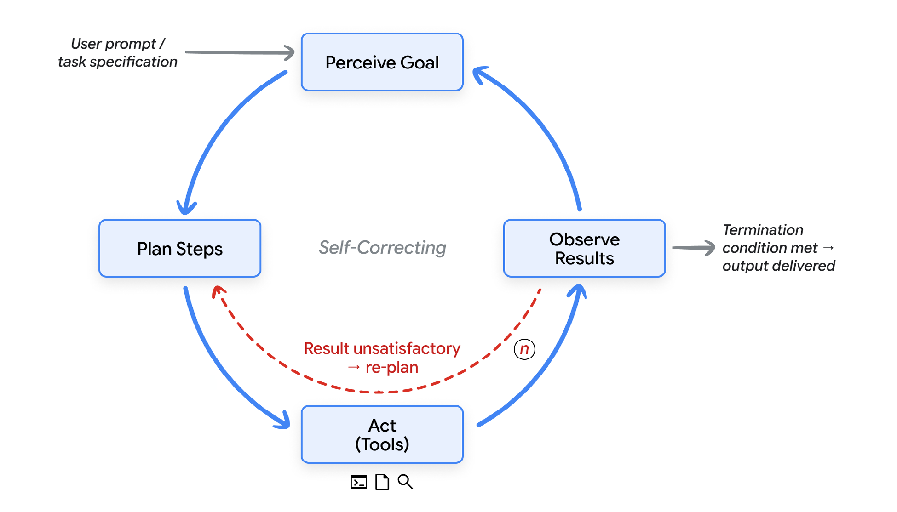
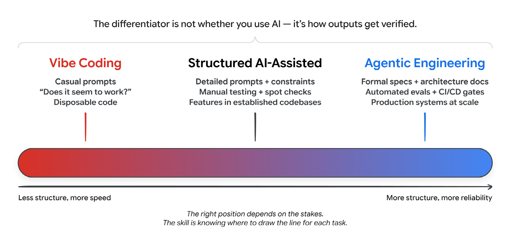
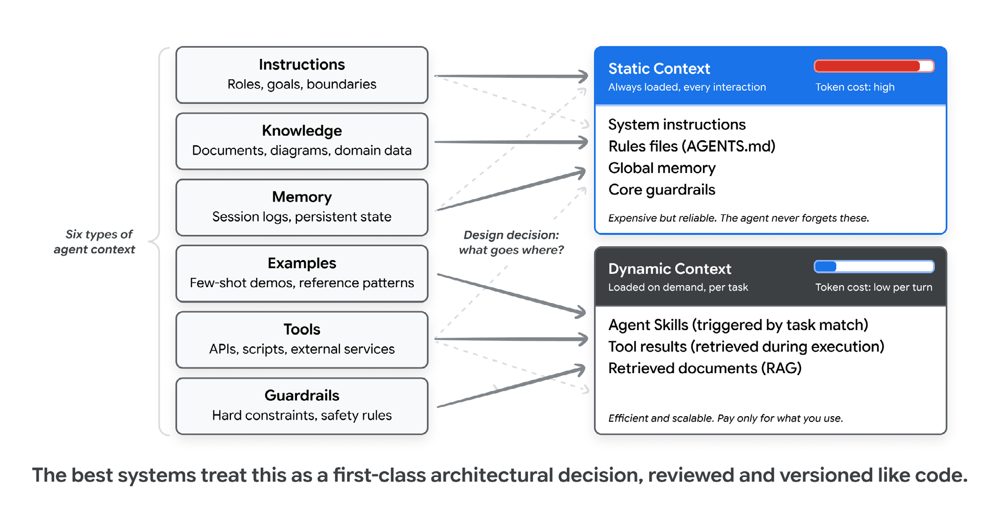
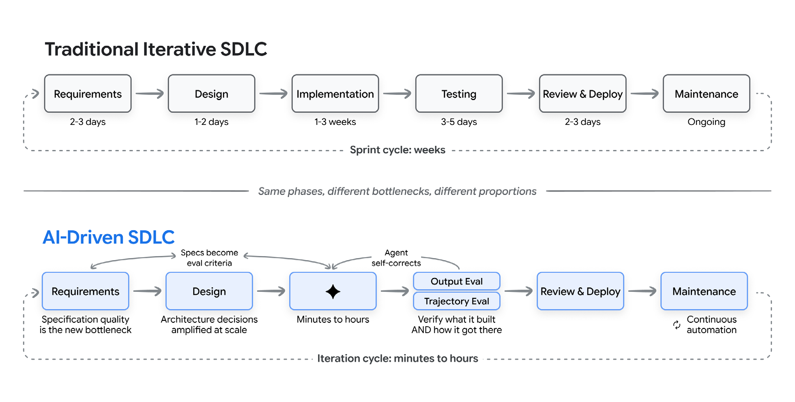
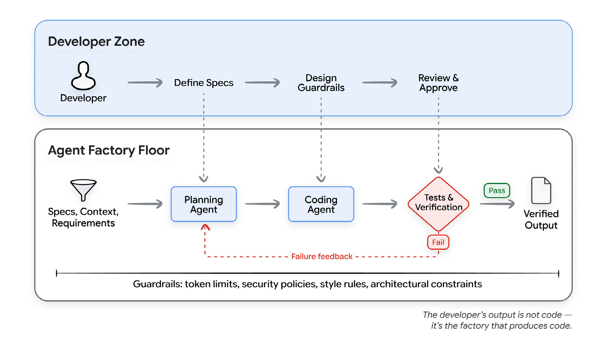
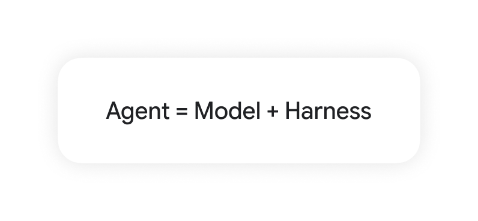
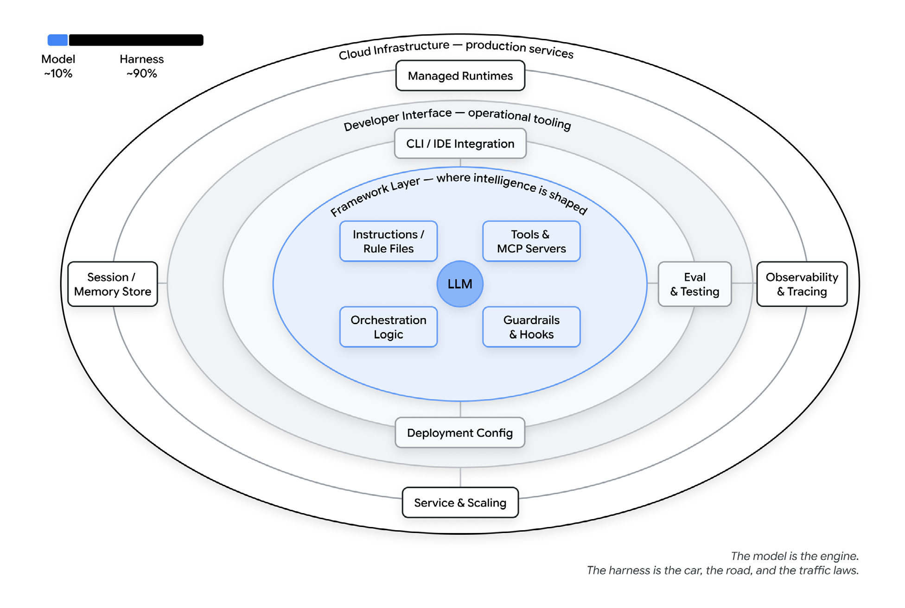
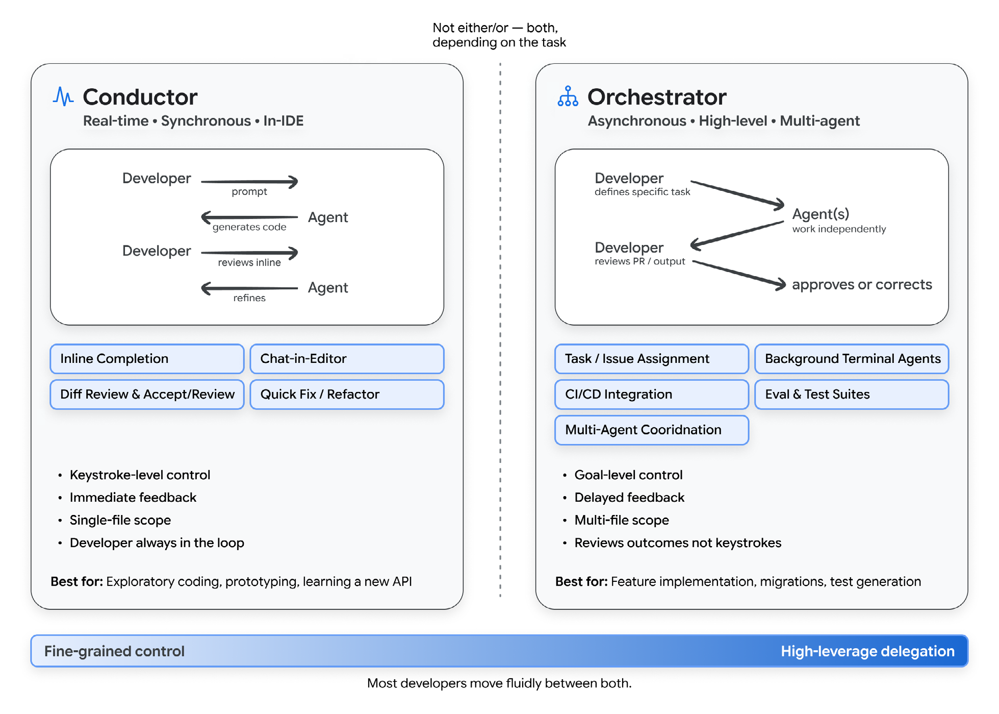
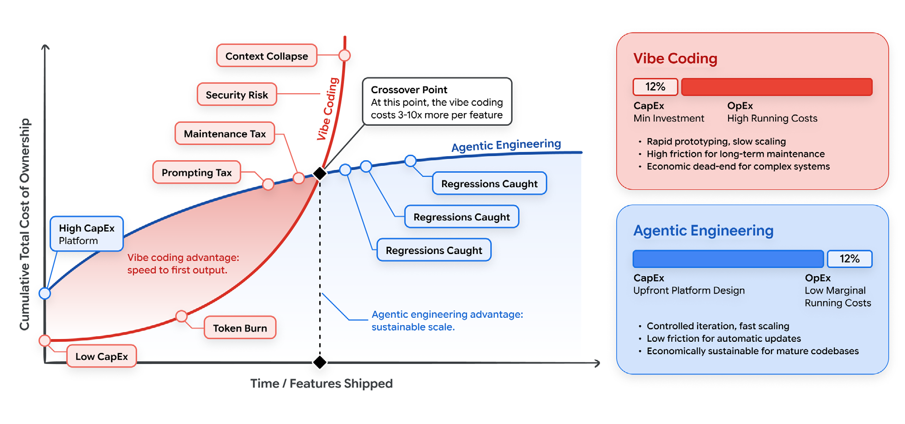

فهرست مطالب
عمیقترین جابهجایی در مهندسی نرمافزار، یک زبان یا چارچوب یا سرویس ابری تازه نیست. گذار از نوشتن کد به بیان قصد (intent) است، و اعتماد به سامانههای هوشمند برای ترجمهٔ آن قصد به نرمافزاری که کار میکند.
۱.مقدمه
در بیشتر تاریخ محاسبات، برنامهنویسی کنشی از جنس ترجمه بوده است: مسئله را به زبان انسانی بفهم، راهحلی انتزاعی طراحی کن، و سپس آن را در نحوی که ماشین بتواند اجرا کند بازنویسی کن. هر گام اصطکاک میآفریند. آن اصطکاک اکنون در حال فروریختن است. مهندسی نرمافزار مهمترین دگرگونی خود را از زمان معرفی زبانهای برنامهنویسی سطحبالا از سر میگذراند.
دههها، رابط اصلی توسعهدهنده با ماشین نحو بوده است: آکولاد، نقطهویرگول، حاشیهنویسی نوع، و دستور زبان دقیق زبانهای برنامهنویسی. آن دوران دارد به پایان میرسد.
پارادایمی تازه رسیده است که در آن توسعهدهندگان بیان میکنند چه میخواهند بسازند، نه اینکه چگونه بسازندش. ماشین پیادهسازی را بر عهده میگیرد. انسان قصد، معماری و قضاوت را فراهم میکند. این آیندهای دور نیست؛ واقعیت روزمرهٔ شمار رو به رشدی از توسعهدهندگان حرفهای است. تا اوایل ۲۰۲۶، ۸۵ درصد توسعهدهندگان حرفهای مرتباً از عاملهای کدنویسی استفاده میکنند، ۵۱ درصد روزانه، و برآورد میشود ۴۱ درصد همهٔ کد تازه را هوش مصنوعی تولید میکند.
این جابهجایی یکشبه رخ نداد. با تکمیل خودکار آغاز شد — پیشبینی سادهٔ توکن (token) در ویرایشگر. سپس پیشنهادهای درونخطی کد آمدند که میتوانستند یک تابع کامل را تمام کنند. بعد رابطهای گفتوگویی اجازه دادند توسعهدهندگان قابلیتها را به زبان طبیعی توصیف کنند و پیادهسازی کارآمد دریافت کنند. حالا عاملهای کاملاً خودگردان (autonomous) میتوانند ریپوها را کپی کنند، تغییرهای چندفایلی را برنامهریزی کنند، آنها را در محیطهای سندباکسی اجرا کنند، تستها (test) را بدوانند و پولریکوئست (pull request) ثبت کنند — همه بدون آنکه انسانی حتی یک خط کد تایپ کند.

پیامدها برای چرخهٔ تولید نرمافزار عمیقاند. هر مرحله — از گردآوری نیازمندیها تا دیپلوی (deploy) و نگهداری — دارد با توانمندیهای هوش مصنوعی بازشکل میگیرد. اما این دگرگونی یکنواخت یا ساده نیست. طیف از «کدنویسی شهودیِ» سرِدستی، که در آن توسعهدهنده درخواستی به هوش مصنوعی میدهد و هرچه برگردد میپذیرد، تا «مهندسی عاملمحورِ» منضبط امتداد دارد، که در آن هوش مصنوعی بهعنوان موتوری نیرومند برای پیادهسازی درون سامانههای بادقتطراحیشدهٔ قیدها، تستها و حلقههای (loop) بازخورد عمل میکند، در حالی که انسانها نظارت بر معماری، درستی و کیفیت را حفظ میکنند.
چرا این مقاله، چرا حالا
ابزارها، توانمندیها و پارادایمهای تازه هفتگی پدیدار میشوند. تیمهای مهندسی به چارچوبی برای فهم این چشمانداز نیاز دارند — نه عکسی لحظهای که ظرف چند ماه کهنه شود، بلکه مجموعهای از اصول و مدلهای ذهنی که با تکامل ابزارهای مشخص همچنان سودمند بمانند.
این مقاله برای چه کسانی است
این مقاله برای مهندسان نرمافزار، مدیران مهندسی، معماران و رهبران فنی است که میخواهند بفهمند هوش مصنوعی چگونه چرخهٔ تولید نرمافزار را بازشکل میدهد، و این توانمندیهای تازه را بدون فداکردن انضباطی که نرمافزار تولیدی میطلبد به کار بگیرند. آشنایی با رویههای مدرن توسعهٔ نرمافزار را فرض گرفتهایم، اما آشنایی با جزئیات هوش مصنوعی یا یادگیری ماشین را نه.
۲.گذار از نحو به قصد
پیش از آنکه جلوتر برویم، به تصویری مشترک از اینکه عامل چیست و کدنویسی شهودی (Vibe coding) واقعاً چه معنایی دارد نیاز داریم. هر دو اصطلاح آنقدر معنا انباشتهاند که باید با دقت از هم بازشان کرد.
عاملهای هوش مصنوعی: یادآوری کوتاه
عامل هوش مصنوعی سامانهای نرمافزاری است که هدفی را ادراک میکند، گامهایی برای رسیدن به آن برنامهریزی میکند، از راه ابزارها کنش انجام میدهد، نتایج را مشاهده میکند، و تکرار میکند تا هدف برآورده شود یا به شرط توقفی برسد. جایی که یک ربات گفتوگو پاسخی تولید میکند و منتظر درخواست بعدی میماند، عامل حلقهٔ خودش را میدواند. شما در بالا هدفی به او میدهید، و او در هر گام تصمیم میگیرد بعد چه کند.

هر عامل، هرقدر ساده یا پیچیده، از پنج بخش ساخته شده است:
- مدل موتور استدلال است. زمینهٔ کنونی را میخواند، تصمیم میگیرد بعد چه باید رخ دهد، و اندیشهٔ بعدی، فراخوان ابزار (tool call) بعدی یا پیام بعدی را تولید میکند.
- ابزارها مدل را به جهان وصل میکنند. شامل رابطهایی که عامل میتواند صدا بزند، کدی که میتواند اجرا کند، پایگاههای دادهای که میتواند پرسوجو کند، و عاملهای دیگری که میتواند به آنها واگذار کند.
- حافظه (memory) وضعیت است. به عامل اجازه میدهد تعاملهای گذشته را به یاد بیاورد، قواعد ویژهٔ پروژه را بازیابی (retrieval) کند، و زمینه (context) را میان نشستها (session) نگه دارد تا هرگز از صفحهٔ سفید شروع نکند.
- ارکستراسیون (orchestration) کدی است که حلقه را میدواند. زمینه را برای هر فراخوان مدل سرِهم میکند، فراخوانهای ابزار (tool) را اعزام میکند، نتایجشان را میگیرد، و تصمیم میگیرد ادامه بدهد یا نه.
- دیپلوی همان چیزی است که نمونهٔ اولیه را به سرویس بدل میکند: میزبانی، هویت، رصدپذیری، و زیرساخت تولیدی که عامل روی آن اجرا میشود.
این بخشها در حلقهای پیوسته با هم کار میکنند: مأموریت را بگیر، صحنه را بپا، خوب فکر کن، کنش انجام بده، مشاهده کن و تکرار کن. حلقه، قلب تپندهٔ هر عامل است. هر چیز دیگری در این مقاله، و هر چیزی در باقی دوره، گونهای از همین حلقه است.
کدنویسی شهودی چیست
در فوریهٔ ۲۰۲۵، آندری کارپثی توصیفی از شیوهٔ تازهای از برنامهنویسی منتشر کرد که در سراسر جامعهٔ مهندسی نرمافزار طنین انداخت. او رویکردی را وصف کرد که در آن کاملاً خود را به «حسوحال» میسپارید، نماییها را در آغوش میگیرید، و فراموش میکنید که کد اصلاً وجود دارد. در این حالت، توسعهدهنده خواستهاش را به زبان طبیعی توصیف میکند، خروجی هوش مصنوعی را میپذیرد، و وقتی چیزی میشکند، پیام خطا را دوباره در درخواست میچسباند و از هوش مصنوعی میخواهد درستش کند.
این اصطلاح فراگیر شد چون چیزی واقعی را گرفته بود: بسیاری از توسعهدهندگان پیشاپیش اینطور کار میکردند اما زبانی برایش نداشتند. ظرف چند ماه، «کدنویسی شهودی» به توصیفگر رایج هر گردشکار (workflow) توسعهٔ هوشمصنوعییار بدل شد، و همین سردرگمی آفرید. آیا مهندس ارشدی که از دستیار هوش مصنوعی برای پیادهسازی قابلیتی خوبمشخصشده استفاده میکند «کدنویسی شهودی» میکند؟ آیا تیمی که از عاملها برای اجرای معماریای بادقتبرنامهریزیشده بهره میگیرد؟ اصطلاح آنقدر گسترده به کار رفت که شروع به ازدستدادن معنا کرد.
تا اوایل ۲۰۲۶، خود کارپثی پذیرفت که قاببندی اولیه بیشازحد تنگ بوده، و اصطلاح «مهندسی عاملمحور» را برای توصیف سر منضبطتر طیف معرفی کرد.
طیف: از کدنویسی شهودی تا مهندسی عاملمحور
بهجای اینکه کدنویسی شهودی و مهندسی عاملمحور را دوتایی بدانیم، سودمندتر است آنها را نقاط انتهایی یک طیف در نظر بگیریم. تمایزدهندهٔ کلیدی این نیست که آیا از هوش مصنوعی استفاده میکنید یا نه. این است که چه میزان ساختار، راستیآزمایی و قضاوت انسانی گرد خروجی هوش مصنوعی را گرفته است.
| بُعد | کدنویسی شهودی | کدنویسی ساختاریافته با کمک هوش مصنوعی | مهندسی عاملمحور |
|---|---|---|---|
| بیان قصد | درخواستهای سرِدستی به زبان طبیعی | درخواستهای مفصل با مثال و قید (constraint) | مشخصات (spec) رسمی، اسناد معماری، فایلهای حافظه |
| راستیآزمایی | «بهنظر میرسد کار میکند؟» | تست دستی، وارسی نقطهای | مجموعهتستهای خودکار، دروازههای (gate) سیآی، داوران مدلزبانی |
| درک کدپایه | حداقلی؛ توسعهدهنده ممکن است کد تولیدشده را نخواند | بازبینی گزینشی مسیرهای بحرانی | بازبینی جامع معماری؛ هوش مصنوعی جزئیات پیادهسازی را اداره میکند |
| مدیریت خطا | کپیکردن پیام خطا و برگرداندنش به هوش مصنوعی | توسعهدهنده علت ریشهای را تشخیص میدهد، هوش مصنوعی اصلاح را پیاده میکند | عاملها درون مرزهای تعریفشده خودتشخیصی میکنند؛ انسانها مسائل معماری را اداره میکنند |
| دامنهٔ مناسب | نمونههای اولیه، اسکریپتها، پروژههای شخصی، هکاتونها | قابلیتها درون کدپایههای جاافتاده | سامانههای تولیدی، توسعه در مقیاس تیم |
| نمای مخاطره | بالا؛ برای کد دورریختنی (Disposable code) پذیرفتنی | متوسط؛ قضاوت انسانی در نقاط وارسی کلیدی | پایین؛ راستیآزمایی نظاممند در هر مرحله |

تستها را کد وارسی میکند؛ ارزیابیها را مجموعهدادههای برچسبخورده، سنجههای (rubric) نمرهدهی و داوران مدلزبانی. بدون هر دو، رویه همیشه کدنویسی شهودی است، صرفنظر از اینکه درخواستها چقدر پیچیده باشند.
مهندسی زمینه: مهارت واقعی
با بلوغ این حوزه، بینشی کلیدی پدیدار شده است: کیفیت کد تولیدشده با هوش مصنوعی کمتر به زیرکی درخواستهای شما بستگی دارد و بیشتر به کیفیت زمینهای که فراهم میکنید. این دریافت به مفهوم مهندسی زمینه (Context engineering) انجامیده است: رویهٔ فراهمکردن اطلاعات غنی و ساختارمند دربارهٔ کدپایه، معماری، قراردادها و قصد شما برای عاملهای هوش مصنوعی.
توسعهدهندگان باید شش نوع اصلی زمینه را در نظر بگیرند:
- دستورها: نقش هستهای عامل، هدفها و مرزهای عملیاتیاش.
- دانش: اسناد بازیابیشده، نمودارهای معماری، و دادهٔ ویژهٔ حوزه.
- حافظه: گزارشهای کوتاهمدت نشست (چه چیزی همین حالا رخ داد) و وضعیت ماندگار بلندمدت (پروژه چیست).
- مثالها: نمایشهای رفتاری چندنمونهای و الگوهای مرجع کدپایه.
- ابزارها: تعریف دقیق رابطها، اسکریپتها و سرویسهای بیرونی که عامل میتواند فرا بخواند.
- گاردریلها (guardrail): قیدهای سخت، قواعد قالببندی، و اعتبارسنجیهای ایمنی.
در تولید کد با هوش مصنوعی، مهندسی زمینه یعنی متوازنکردن بادقتِ اینکه عامل کدامیک از این شش عنصر را از پیش در اختیار دارد و کدام را میتواند هنگام نیاز بازیابی کند. این جدایی حیاتی میان زمینهٔ ایستا (Static) و زمینهٔ پویا (Static) را میسازد.
زمینهٔ ایستا همیشه بارگذاری شده است: دستورهای سامانه، فایلهای قاعده، حافظهٔ سراسری، و تعریف شخصیت. تعیین میکند عامل کیست و چطور رفتار میکند. زمینهٔ ایستا گران است، چون هر توکن در هر تعامل حاضر است، صرفنظر از اینکه مرتبط باشد یا نه.
زمینهٔ پویا هنگام نیاز بار میشود: دستورهای مهارت که با تطبیق کار فعال میشوند، نتایج ابزار که حین اجرا بازیابی میشوند، اسنادی که از خطوط لولهٔ بازیابی گرفته میشوند، و تاریخچهٔ پنجرهای نشست. زمینهٔ پویا کارآمد است، چون عامل هزینهٔ توکن را فقط وقتی میپردازد که اطلاعات لازم باشد.

نیرومندترین الگو برای مدیریت زمینهٔ پویا، مهارتهای عامل است: بستههای ساختارمند و قابلحمل دانش رویهای که عامل فقط وقتی بارشان میکند که کار اقتضا کند.
بهجای جاسازی هر تکه دانش تخصصی در پرامپت سامانهٔ عامل، مهارتها به عامل اجازه میدهند یک عمومیکار سبک بماند که بهاقتضا و از راه افشای تدریجی (Progressive disclosure) در نقشهای تخصصی فرو میرود. عامل در آغاز فقط فرادادهٔ سبک را میبیند، وقتی کاری تطبیق پیدا کرد دستورهای کامل را بار میکند، و مطالب مرجع عمیق را فقط هنگام نیاز صریح میکشد. نتیجه این است که عامل میتواند دهها توانمندی تخصصی حمل کند، در حالی که هزینهٔ توکن را فقط برای همانی میپردازد که فعالانه به کار میبرد.
مهارتهای عامل در عاملهای کدنویسی و سکوهای سازمانی بهسرعت پذیرفته شدهاند، چون چهار مسئله را حل میکنند:
- پوسیدگی زمینه (Context rot) بر اثر درخواستهای بیشازحد بارگذاریشده
- نبود حافظهٔ رویهای (Procedural memory) برای مدلهای زبانی بزرگ
- سربار عملیاتی معماریهای چندعاملی
- نیاز به قابلیت حمل میان ابزارها و فروشندگان
مدلها به دستورهای زیرکانهنوشتهشده آنقدر نیاز ندارند که به همان زمینهای نیاز دارند که یک توسعهدهندهٔ انسانی ماهر برای کار خوب لازم دارد. پرسش این نیست که «چطور هوش مصنوعی را فریب بدهم تا کد خوب بنویسد؟» بلکه این است که «یک عضو تازهٔ تیم چه چیزی باید بداند تا مؤثر مشارکت کند، و چطور آن دانش را در شکلی که هوش مصنوعی بتواند به کار ببرد رمزگذاری کنم؟»
مهندسی زمینه پل میان کدنویسی شهودی و مهندسی عاملمحور است. با جابهجایی تمرکز از نوشتن نحو به مهندسی این زمینه، گلوگاههای ساخت نرمافزار بنیاداً تغییر میکنند. ما دیگر منتظر دستان انسانی برای تایپ کد تکراری نیستیم؛ منتظر ذهنهای انسانی هستیم تا مرزها را تعریف کنند.
۳.چرخهٔ جدید تولید نرمافزار
چرخهٔ سنتی زیر فشار
چرخهٔ تولید نرمافزار پیشاپیش یک دگرگونی بزرگ را از سر گذرانده است. در دو دههٔ گذشته، بیشتر سازمانها از فرایندهای متوالی آبشاری به مدلهای تکرارشونده کوچ کردند: دورههای چابک، سیآی، خطوط لولهٔ عملیات توسعه، و چرخههای انتشار سریع. آن جابهجایی حلقههای بازخورد را کوتاه کرد، تست را به توسعه نزدیکتر ساخت، و دیپلوی را از رویدادی فصلی به فرایندی پیوسته بدل کرد.
هوش مصنوعی این چرخه را بهشدت فشرده میکند، اما نابرابر: پیادهسازیای که زمانی هفتهها طول میکشید حالا میتواند ساعتی انجام شود، در حالی که نیازمندیها، معماری و راستیآزمایی سرسختانه با سرعت انسانی میمانند. نتیجه نسخهٔ سریعتری از چرخهٔ قدیمی نیست. گردشکاری متفاوت است، که در آن مرزهای میان مراحل محو میشوند، چرخههای تکرار از هفته به دقیقه کوتاه میشوند، و نقش توسعهدهنده از پیادهساز اصلی به طراح سامانه و داور (judge) کیفیت جابهجا میشود.

هوش مصنوعی هر مرحله را چگونه دگرگون میکند
نیازمندیها و برنامهریزی
نیازمندیها مرحلهای است که فاصلهٔ میان قصد و پیادهسازی تاریخاً در آن بیشترین بوده است. ترجمهٔ نیازهای کسبوکار به مشخصات فنی فرایندی دستی و خطاپذیر بوده که شکافی پایدار میان آنچه ذینفعان میخواهند و آنچه مهندسان میسازند میآفریند.
ابزارهای مدرن میتوانند مستقیم در پالایش نیازمندیها مشارکت کنند: تولید داستانهای کاربر از خلاصههای محصول، شناسایی حالتهای مرزی که انسانها از دست میدهند، تولید اسکیمای رابطها از توصیفهای زبان طبیعی، و ساخت نمونههای اولیهٔ تعاملی از اسناد مشخصات. نیازمندیها دیگر سندی نیست که میان تیمها دستبهدست شود؛ گفتوگویی میان انسان و هوش مصنوعی است که همزمان مشخصات و پیادهسازی اولیه تولید میکند.
طراحی و معماری
معماری سرسختانهترین مرحلهٔ انسانمحور چرخه باقی میماند، و دلیل خوبی هم دارد. تصمیمهای معماری بنیاداً دربارهٔ موازنهاند: سازگاری در برابر دسترسپذیری، پیچیدگی در برابر انعطاف، ساختن در برابر خریدن. این موازنهها به زمینهٔ کسبوکار، قیدهای سازمانی و ملاحظات راهبردی بلندمدتی بستگی دارند که هوش مصنوعی نمیتواند کاملاً درکشان کند.
هوش مصنوعی در پیادهکردن تصمیمهای معماری پس از گرفتهشدنشان عالی است. با سند معماری روشن، عاملها میتوانند کل برنامهها را اسکلتبندی کنند، الگوهای یکدست را در ماژولها تولید کنند، و تضمین کنند کد تازه با قراردادهای جاافتاده میخواند.
پیادهسازی
عاملهای کدنویسی مدرن میتوانند کل قابلیتها را از توصیفهای زبان طبیعی تولید کنند، الگوریتمهای پیچیده را پیاده کنند، و تغییرهای چندفایلی بسازند که درست با هم کار میکنند. بهرهوری واقعی است: پیمایشهای صنعتی بهبود ۲۵ تا ۳۹ درصدی گزارش میدهند.
تست و تضمین کیفیت
آزمودن کد تولیدشده با هوش مصنوعی نیازمند ارزیابی نهفقط آنچه عامل تولید کرد، بلکه چگونه به آن رسید است. ارزیابی خروجی مصنوع نهایی را وارسی میکند: آیا کد کامپایل میشود، آیا تستها میگذرند؟ ارزیابی مسیر، توالی کامل فراخوانهای ابزار و استدلال میانی را وارسی میکند. هر دو لازماند، چون خروجی روانی که گامهای راستیآزماییاش را جا انداخته، شکستی خطرناکتر از خروجیای با خطای آشکار است.
مهمتر اینکه تستها و ارزیابیها به سازوکار اصلی انتقال قصد به عاملها بدل میشوند: مجموعهارزیابی خوبنوشتهشده به هوش مصنوعی میگوید «درست» یعنی چه، و راهی خودکار برای راستیآزماییاش فراهم میکند. این رویهها وقتی مؤثرترند که در یک چرخطیار کیفیت پیوسته سیمکشی شوند: ارزیابی در برابر مجموعهبنچمارک، تشخیص شکستها با خوشهبندی علتهای ریشهای، بهینهسازی درخواستها یا ابزارهایی که باعثشان شدند، راستیآزمایی اصلاحها در برابر مجموعهٔ پسرفت، و پایش ترافیک تولید برای حالتهای شکست تازه. هر چرخه مرکب میشود.
بازبینی کد و دیپلوی
فرایند بازبینی خودش در حال تقویت است، با هوش مصنوعی که بهعنوان بازبین نوبت اول عمل میکند و میتواند اشکالهای بالقوه، نقضهای سبکی، آسیبپذیریهای امنیتی و مسائل کارایی را پیش از آنکه بازبین انسانی کد را ببیند شناسایی کند. این جایگزین بازبینی انسانی نمیشود — تصمیمهای وابسته به زمینه دربارهٔ طراحی، نگهداشتپذیری و همراستایی راهبردی همچنان قضاوت انسانی میطلبند — اما بار شناختی بازبینان را بهشدت کاهش میدهد.
نگهداری و تکامل
شاید دستکمگرفتهشدهترین دگرگونی در نگهداری باشد. کدپایههای قدیمی که زمانی برای اعضای تازهٔ تیم نفوذناپذیر بودند، حالا میتوانند با کمک هوش مصنوعی پیموده، فهمیده و اصلاح شوند.
این پیامدهای چشمگیری برای بدهی فنی دارد. کدی که «بیشازحد پرخطر برای دستزدن» شمرده میشد — چون فقط نویسندگان اصلیاش میفهمیدندش — حالا میتواند ایمن بازسازی، نوسازی و گسترش یابد. عاملها میتوانند کدپایهها را نظاممند میان چارچوبها مهاجرت دهند، رابطهای منسوخ را بهروز کنند، و مجموعهتستها را نوسازی کنند — کارهایی که پیشتر چنان کسلکننده و پرخطر بودند که بهسادگی هرگز انجام نمیشدند.
مدل کارخانه: ساختن سامانهای که نرمافزار میسازد
مدل ذهنیای که این دگرگونیها را به هم گره میزند، چیزی است که مدل کارخانه (Factory model) مینامیمش. در این مدل، خروجی اصلی توسعهدهنده کد نیست — سامانهای است که کد تولید میکند. این سامانه شامل اینهاست:
- مشخصات و زمینهای که تعریف میکند چه باید ساخته شود
- عاملهایی که مشخصات را به پیادهسازی ترجمه میکنند
- تستها و دروازههای کیفیت که درستی را راستیآزمایی میکنند
- حلقههای بازخورد که شکستها را برای اصلاح به عاملها برمیگردانند
- گاردریلهایی که عاملها را به رفتار ایمن و قابلپیشبینی مقید میکنند
مدیر کارخانه هر قطعه را با دست سرِهم نمیکند. او خط مونتاژ را طراحی میکند و کنترل کیفیت را تضمین. توسعهدهندهٔ مدرن سامانهٔ توسعه را طراحی میکند و تضمین میکند خروجیاش استاندارد لازم را برآورده کند. موفقیت از دادن معیارهای موفقیت به عاملها میآید، نه دستورهای گامبهگام — و سپس گذاشتن اینکه تکرار کنند.

۴.مهندسی مهار: آنچه گرد مدل را گرفته است
اگر توسعهدهنده مدیر کارخانه باشد، مدل هوش مصنوعی صرفاً موتور خام روی کف کارخانه است. موتور بهتنهایی نمیتواند خودرو بسازد؛ به تسمه، چرخدنده، حسگر ایمنی و خط مونتاژ نیاز دارد. در زمینهٔ توسعهٔ هوشمصنوعییار، این ماشینآلات پیرامونی با نام مهار (harness) شناخته میشود.
وقتی سازندگان شروع به کار با عاملها میکنند، وسوسهای هست که مدل را همان سامانه بدانند. مدل تازهای میآید، عامل باهوشتر میشود. مدل قدیمیتر، و عامل بدتر. مدل به توضیح همهچیزِ خوب و بد بدل میشود.
آن شهود غلط است، و به سرمایهگذاریهای اشتباه میانجامد. مدل یکی از ورودیهای عاملِ در حال اجراست. هر چیز دیگری — درخواستها، ابزارها، سیاستهای (policy) زمینه، قلابها، سندباکسها، زیرعاملها، رصدپذیری (observability) — مهار است: داربستی که گرد مدل پیچیده میشود و اجازه میدهد واقعاً چیزی را تمام کند.

مدل خام یک عامل نیست. وقتی عامل میشود که مهاری به آن وضعیت، اجرای ابزار، حلقهٔ بازخورد و قیدهای قابلاعمال بدهد. رفتاری که توسعهدهندگان هنگام کار با عاملهای کدنویسی تجربه میکنند، بیش از هر چیز زیر سلطهٔ کاری است که مهار میکند، نه فقط اینکه کدام مدل زیرش نشسته است.

درون مهار چیست
- دستورها و فایلهای قاعده: متنی که تعریف میکند عامل کیست، به چه اهمیت میدهد، و از چه کاری منع شده است. شامل فایلهای راهنمای عامل، فایلهای مهارت، و درخواستهای زیرعامل (subagent).
- ابزارها: توابع، سرورهای پروتکل زمینهٔ مدل، و رابطهایی که عامل میتواند صدا بزند، بهعلاوهٔ نثری که پیرامونشان میگوید کِی و چگونه صدایشان بزند.
- سندباکسها (sandbox) و محیطهای اجرا: جایی که کد عامل واقعاً اجرا میشود، به چه چیزی دسترسی دارد، و به چه چیزی نمیتواند برسد.
- منطق ارکستراسیون: زایش زیرعاملها، مسیریابی (routing) مدل، تحویل میان متخصصها، و قواعدی که تعیین میکنند هرکدام کِی شلیک شوند.
- گاردریلها یا قلابها (hook): کد قطعی که در نقاط مشخصی از چرخهٔ عمر اجرا میشود: پیش از فراخوان ابزار، پس از ویرایش فایل، پیش از ثبت. قلاب جای چیزهایی است که عامل هرگز نباید فراموششان کند اما اغلب میکند.
- رصدپذیری: گزارشها، ردها، ارزیابیها، و اندازهگیری هزینه و تأخیر (latency). بدون رصدپذیری، راهی برای فهمیدن اینکه عامل خوب کار میکند یا بیسروصدا منحرف میشود وجود ندارد.
اگر این سطح گستردهای بهنظر میرسد، هست. و سطح تیم شماست، نه ارائهدهندهٔ مدل.
مهار در چرخهٔ تولید
در حالی که مدل تعیین میکند کار چگونه انجام شود، مهار داربستی است که دسترسی به ابزارها، سندباکسها و ارکستراسیون لازم برای اجرایش را فراهم میکند. بنابراین مهار باید در هر مرحلهای که عامل در آن کار میکند حاضر باشد.
| مرحله | اجزای مهار | کنش |
|---|---|---|
| ۱. نیازمندی، برنامهریزی و معماری پیکربندی مهار |
دستورها و فایلهای قاعده | توسعهدهنده فایلهای قاعده را میسازد و قیدهای معماری را تعریف میکند، ابزارهایی را که عامل به آنها دسترسی خواهد داشت مشخص میکند، و قواعد بنیادینی را که عامل نمیتواند بشکند میگذارد. |
| ۲. پیادهسازی دواندن مهار |
سندباکسها، محیطهای اجرا، ابزارها | همانطور که مدل کد تولید میکند، آن را درون سندباکس ایزولهٔ مهار اجرا میکند. اگر مدل نیاز به خواندن فایل یا جستوجوی وب داشته باشد، از ابزارهایی که مهار فراهم کرده استفاده میکند. |
| ۳. تست و تضمین کیفیت حلقهٔ بازخورد |
منطق ارکستراسیون، گاردریلها | مهار محیط اجرا را فراهم میکند تا تستهای خودکار اجرا شوند. اگر تستی شکست بخورد، منطق ارکستراسیون خروجی خطا را میگیرد و به مدل برمیگرداند و از او میخواهد دوباره تلاش کند. مهار همان چیزی است که این حلقهٔ «فکر ← کنش ← مشاهده» را میسازد. |
| ۴. بازبینی، دیپلوی و نگهداری مشاهدهٔ مهار |
قلابها، رصدپذیری | مهار قلابهای قطعی را میدواند (مثلاً مسدودکردن یک ثبت اگر عامل بکوشد گذرواژهای سختکدشده را بفرستد). لایهٔ رصدپذیری هزینهٔ توکن، تأخیر و انحراف (drift) عامل را ردیابی میکند و اجازه میدهد مهندسان دقیقاً ممیزی کنند چرا عامل تصمیم دیپلوی مشخصی گرفت. |
بنچمارکهای (benchmark) عمومی اندازهٔ این اثر را ملموس میکنند. روی یکی از بنچمارکهای شناختهشده، تیمی عاملی را با تغییر فقط مهار و بدون هیچ تغییر مدلی، از بیرون رتبهٔ ۳۰ به جمع پنج برتر رساند. مطالعهای جداگانه امتیاز عاملی را روی همان بنچمارک، تنها با تنظیم پرامپت سامانه، ابزارها و میانافزار پیرامون مدلی ثابت، ۱۳٫۷ واحد بالا برد.
نسخهٔ روزمرهٔ این مشاهده حیاتی است: وقتی عامل کاری را اشتباه میکند، نخستین غریزه سرزنش مدل است. اما اغلب، شکست به ابزاری غایب، قاعدهای مبهم، گاردریلی نبوده، یا کانتکست ویندوای انباشته از نویز برمیگردد. بیشتر شکستهای عامل، اگر صادقانه بررسی شوند، شکست پیکربندیاند.
۵.نقش در حال تحول توسعهدهنده
همانطور که هوش مصنوعی بخش بیشتری از کار پیادهسازی را بر عهده میگیرد، نقش توسعهدهنده به شیوههایی دگرگون میشود که هم هیجانانگیزند و هم گیجکننده. سودمند است به دو حالت فکر کنیم که توسعهدهندگان بهروانی میانشان جابهجا میشوند: رهبر ارکستر (Conductor) و هماهنگکننده (Orchestrator).

رهبر ارکستر: هدایت عملی و زمانواقعی
در حالت رهبر ارکستر، توسعهدهنده در زمان واقعی با یک جفتبرنامهنویس هوشمند کار میکند. او در ویرایشگر است، تماشا میکند کد ظاهر میشود، هوش مصنوعی را با درخواست و اصلاح هدایت میکند، و کنترل ریزدانه بر آنچه نوشته میشود حفظ میکند. هوش مصنوعی سازی نیرومند است، اما توسعهدهنده فعالانه هر حرکت را هدایت میکند.
این حالت وقتی معمول است که روی منطق پیچیده کار میشود، مسائل دشوار دیباگ میشوند، یا در کدپایههای ناآشنا کار میشود که توسعهدهنده باید هر تغییر را همان لحظه بفهمد. این حالت برای توسعهدهندگانی که از پیشینهٔ مهندسی سنتی میآیند طبیعی است و حس فهم و کنترلی را که بسیاری از مهندسان ارزشمند میدانند حفظ میکند. ریسکش این است که خودش به گلوگاه بدل شود — اگر توسعهدهنده شخصاً هر ضربهٔ کلید را هدایت کند، بهبود توان عبوری محدود میماند.
هماهنگکننده: واگذاری ناهمزمان و چندعاملی
در حالت هماهنگکننده، توسعهدهنده در سطح انتزاع بالاتری عمل میکند. هدفها را تعریف میکند، به عاملها تخصیصشان میدهد، و نتایج را بازبینی میکند — اما تماشا نمیکند کد خطبهخط ظاهر شود. عاملها ممکن است در پسزمینه، بهموازات، روی بخشهای مختلف کدپایه کار کنند. توسعهدهنده دورهای سر میزند، خروجی را بازبینی میکند، و مسیر را اصلاح میکند.
این حالت برای کارهای خوبتعریفشده معمول است: رفع اشکال، پیادهسازی قابلیت در برابر الگوهای جاافتاده، مهاجرت کدپایه، و تولید تست. حالت هماهنگکننده مجموعهمهارت متفاوتی میطلبد. بهجای تخصص عمیق در نحو و اصطلاحات زبان، این مهارتها را میخواهد:
- مشخصاتنویسی: تعریف کارها آنقدر دقیق که عامل بتواند بدون ابهام اجرایشان کند.
- تجزیه (decomposition): شکستن کارهای بزرگ به واحدهایی با اندازهٔ مناسب برای اجرای عامل.
- ارزیابی: سنجش سریع اینکه آیا خروجی عامل استانداردهای کیفیت را برآورده میکند.
- طراحی سامانه: طراحی قیدها، تستها و حلقههای بازخوردی که عاملها را پربازده نگه میدارند.
مسئلهٔ ۸۰ درصد
ماهیت خطاهای هوش مصنوعی از اشتباههای سادهٔ نحوی به شکستهای مفهومی موذیانهتر تکامل یافته است: پیشفرضهای غلط دربارهٔ منطق کسبوکار، ناتوانی در درخواست شفافسازی برای نیازمندیهای مبهم، جاافتادن حالتهای مرزی، و تصمیمهای معماریای که بار نگهداری ظریف بلندمدت میسازند. این خطاها دقیقاً از آن رو سختتر شناسایی میشوند که کد «درست بهنظر میرسد» و حتی ممکن است تستهای پایه را بگذراند.
توسعهدهندگانی که این چالش را مؤثرتر میپیمایند، موضع مشخصی میگیرند: هوش مصنوعی را برای آنچه در آن خوب است به کار میبرند (پیادهسازی سریع کارهای خوبمشخصشده) و توجه خودشان را برای آنچه هوش مصنوعی در آن دشواری دارد نگه میدارند (نیازمندیهای مبهم، موازنههای معماری، و راستیآزمایی درستی). آنها نمیکوشند با پذیرفتن هر چیزی که هوش مصنوعی تولید میکند سریعتر باشند؛ میکوشند با متمرکزکردن تخصصشان در جایی که بیشترین اهمیت را دارد سریعتر باشند.
۶.عاملهای کدنویسی در عمل
جای عاملها در روز کاری توسعهدهنده
عاملهای کدنویسی در سه جا در کار روزمره ظاهر میشوند. بیشتر توسعهدهندگان هر سه را همزمان به کار میبرند.
در ویرایشگر
تکمیل درونخطی که خط بعدی را همانطور که توسعهدهنده تایپ میکند پیشنهاد میدهد. پنلهای گفتوگو که کد را درجا توضیح میدهند یا تغییر میدهند. آگاهی از کل کدپایه درون ویرایشگر. اینجا جایی است که بیشتر افراد نخستینبار با هوش مصنوعی در کدنویسی روبهرو میشوند، و کار در جریان میماند.
در ترمینال
عاملهایی که توسعهدهنده از خط فرمان راه میاندازد، هدفی را به زبان ساده به آنها میدهد، و میگذارد در سراسر کدپایه کار کنند. دسترسی کامل به فایلسیستم، ویرایش چندفایلی، و توان اجرای ابزار و تست و تکرار بر پایهٔ نتایج. اینجا جایی است که کدنویسی شهودی جدی امروز رخ میدهد.
در پسزمینه
عاملهایی که کاری را میگیرند و خودگردان در سندباکسهای ابری اجرا میشوند، اغلب برای ساعتها، و اغلب یک پولریکوئست بهعنوان خروجی تولید میکنند. توسعهدهنده کار را واگذار میکند و بعداً بازبینیاش میکند.
در عمل، عامل ویرایشگر وقتی کمک میکند که توسعهدهنده در میانهٔ نوشتن کد است و پیشنهاد، ویرایش سریع یا توضیح میخواهد بیآنکه از جریان خارج شود. عامل ترمینال به کار چندفایلی، کاوش کدپایههای ناآشنا، و کارهایی میخورد که عامل باید کد را اجرا کند و به آنچه مشاهده میکند واکنش نشان دهد. عامل پسزمینه به کارهای خوبمشخصشدهای میخورد که توسعهدهنده میتواند در یک پاراگراف توصیفشان کند و برود. نقطهٔ شروع درست به کار بستگی دارد، نه به اینکه کدام دسته بالاتر روی نردبان خودگردانی نشسته است.
کدنویسی شهودیِ عاملهای آمادهٔ تولید
هر چیزی که تا اینجا بحث شد دربارهٔ استفاده از عاملهای کدنویسی برای ساخت نرمافزار بود. اما وقتی چیزی که باید بسازید خودش یک عامل باشد چه؟
رباتی برای پشتیبانی مشتری که درخواستهای بازپرداخت را اداره میکند. دستیاری پژوهشی که منابع را تطبیق میدهد و گزارشهای مستند تولید میکند. ابزاری داخلی که انطباق را پایش میکند و ناهنجاریها را علامت میزند. اینها کارهایی نیستند که با عاملی در ترمینال حلشان کنید. اینها محصولاند و به ابزار، حافظه، ارزیابی و زیرساخت دیپلوی خودشان نیاز دارند.
همان گردشکار ترمینالمحوری که اسکریپتهای نمونه تولید میکند، حالا به این عاملهای تولیدی هم میرسد. ساخت، ارزیابی و دیپلوی عاملی واقعی که در مقیاس اجرا میشود — با حافظهٔ ماندگار، حکمرانی و رصدپذیری — از کاری در سطح چارچوب و کنسول ابری به چیزی بدل شده که در همان ترمینال رخ میدهد، اغلب با گفتوگو با همان عامل کدنویسیای که توسعهدهنده پیشاپیش به کار میبرد.
برای اسکریپتهای یکبارمصرف یا خودکارسازی شخصی، یک عامل کدنویسی معمولی کافی است؛ عامل مقصد است. برای عاملهایی که به کاربران واقعی در مقیاس خدمت میکنند، عامل خودِ محصول است، و به بستری زیرین نیاز دارد.
# One-time setup
uvx google-agents-cli setup
# Then in your coding agent:
> Build a support agent that answers questions from our docs.
> evaluate it on the FAQ dataset
> Deploy it to Agent Engineقطعهٔ ۱: راهاندازی و ساخت با خط فرمان عاملها.
پشت آن دستور (instruction) واحد، عامل کدنویسی پروژهای را از قالب اسکلتبندی میکند، کد را مینویسد، یک مجموعهارزیابی تولید میکند، آن را روی عامل میدواند، به رانتایم (runtime) مستقر میکند، و گزارش میدهد. عاملهای تولیدی پیشتر پشته و گردشکار جداگانهای از نمونههای اولیه میخواستند. حالا نمونهٔ اولیهای که دیروز روی لپتاپ توسعهدهنده اجرا میشد، میتواند امروز بدون بازنویسی به عامل تولیدیای بدل شود که به کاربران واقعی خدمت میکند.
همین گردشکار از یک عامل به چند عامل مقیاس میگیرد. هماهنگی میان عاملها برای حالتهای ساده از راه وضعیت مشترک نشست، برای دسترسی به ابزار از راه پروتکل زمینهٔ مدل، و برای واگذاری (handoff) میانعاملی از راه پروتکل عاملبهعامل (A2A) رخ میدهد. در آزمایشی که اوایل ۲۰۲۶ منتشر شد، تیمهای عاملی که روی چنین معماریای اجرا میشدند، ظرف دو هفته یک کامپایلر زبان C کارآمد ساختند، در حالی که انسانها جهت را تعیین و خروجی را بازبینی میکردند اما پیادهسازی را نمینوشتند. گلوگاه از نوشتن کد به مشخصکردن اینکه چه باید بکند و راستیآزمایی اینکه عاملها کردند، جابهجا شد.
۷.اقتصاد توسعه با هوش مصنوعی
هنگام ارزیابی اثر هوش مصنوعی بر چرخهٔ تولید نرمافزار، گفتوگو اغلب با سرعت توسعهدهنده آغاز و تمام میشود: چقدر سریع میتوانیم کد بنویسیم؟ اما برای رهبران مهندسی، سنجهٔ حیاتیتر هزینهٔ کل مالکیت است.
برای فهم هزینهٔ واقعی توسعهٔ هوشمصنوعییار، باید ببینیم گردشکارهای مختلف چگونه بارهای مالی و عملیاتی را میان هزینهٔ سرمایهای — سرمایهگذاری اولیه برای ساختن چیزی — و هزینهٔ عملیاتی — هزینهٔ جاری اجرا، اصلاح و نگهداری — جابهجا میکنند. نکتهٔ حیاتی این است که در عصر هوش مصنوعی، هزینهٔ عملیاتی بهشدت تابع اقتصاد توکن است.

بدهی پنهان کدنویسی شهودی — سرمایهٔ کم، عملیات گران
در نگاه اول، کدنویسی شهودی بهطرز باورنکردنی مقرونبهصرفه بهنظر میرسد. سد ورود عملاً صفر است: اشتراکی ماهانه و چند درخواست سرِدستی. هزینهٔ سرمایهای ناچیز است چون توسعهدهنده کاملاً به توانمندیهای پایهٔ مدل تکیه میکند بهجای سرمایهگذاری وقت در طراحی سامانه. اما اقتصاد کدنویسی شهودی بار عظیم و مرکبشوندهٔ عملیاتی را پنهان میکند:
- نرخ سوخت توکن: هر تعامل با مدل زبانی هزینهای بر پایهٔ توکن ورودی و خروجی دارد. در کدنویسی شهودی، توسعهدهندگان اغلب فایلهای عظیم و بیساختار را در کانتکست ویندو (context window) میریزند و مکرراً از مدل میخواهند اشتباههای راستیآزمایینشدهٔ خودش را درست کند. این «حلقهٔ پرامپتدهی» گرانقیمتی میسازد که توکنها را با نرخ موفقیت پایین در نوبت اول میسوزاند.
- مالیات نگهداری: کدی که از راه پرامپتدهی نامنظم نوشته شده اغلب انسجام ساختاری ندارد. وقتی شش ماه بعد اشکالی سر بلند میکند، مهندسان انسانی باید روزها صرف مهندسی معکوس کد بیساختار کنند.
- ترمیم امنیتی: بدون مهار ارزیابی خودکار، تولید سریع کد به تولید سریع آسیبپذیری میانجامد. هزینهٔ رفع نقص امنیتی در تولید بهشکل نمایی بالاتر از گرفتنش در مرحلهٔ طراحی است.
سرمایهگذاری مهندسی عاملمحور — سرمایهٔ زیاد، عملیات ارزان
مهندسی عاملمحور این مدل اقتصادی را وارونه میکند. سرمایهگذاری آگاهانه و اولیهای از وقت و منابع مهندسی میطلبد، پیش از آنکه حتی یک خط کد تولیدی تولید شود. هزینهٔ سرمایهای شامل طراحی اسکیمای رابطها، ساخت مجموعهتستهای قطعی، و مهمتر از همه، ساختاردهی زمینهٔ عامل است. هرچند این هزینهٔ اولیه بالاتر است، هزینهٔ نهایی انتشار و نگهداری هر قابلیت بهشدت افت میکند. هوش مصنوعی درون «کارخانهای» سختگیرانه حکمرانیشده کار میکند، یعنی خروجیاش از نظر ساختاری سالم، از پیش آزموده، و همراستا با استانداردهای شرکت است.
مهندسی زمینه بهمثابه اهرم مالی
در اقتصاد توکن، مهندسی زمینه فقط یک مهارت فنی نیست — یک راهبرد مالی است. مدلهای زبانی برای هر تکه اطلاعاتی که میفرستید هزینه میگیرند. فرستادن یک ریپو (repository) صدهزارتوکنی در هر درخواست، در مقیاس از نظر مالی ناممکن است.
مهندسی زمینهٔ مؤثر تضمین میکند مدل باری متراکم و پرسیگنال دریافت کند، نه باری پراکنده و پرنویز. با فراهمکردن زمینهٔ درست از ابتدا، توسعهدهندگان نرخ موفقیت نوبت اول عامل را بهشدت بالا میبرند و از حلقههای پرهزینهٔ تستوخطا که کدنویسی شهودی را آزار میدهند میپرهیزند.
افزون بر این، مهندسی عاملمحور مسیریابی هوشمند مدل را ممکن میکند. در گردشکار کدنویسی شهودی، توسعهدهنده معمولاً برای هر تعامل به یک مدل مرزی عظیم تکیه میکند — و قیمت توکن ممتاز میپردازد فقط برای اینکه از هوش مصنوعی بخواهد یک غلط تایپی را درست کند. مدل کارخانهٔ خوبطراحیشده از این هدررفت میپرهیزد: مدلهای بزرگ و پیشرفته را برای کارهای بسیار پیچیده به کار میبرد اما کارهای قطعی و کمپیچیدگی را خودکار به مدلهای کوچکتر، سریعتر و بهمراتب ارزانتر مسیریابی میکند.
۸.از کجا شروع کنیم
گذار از نحو به قصد وضعیتی آینده نیست. کاری است که امروز پیش روی ماست. چه این را بهعنوان سازندهای منفرد بخوانید و چه بهعنوان رهبری که به پذیرش این ابزارها در تیم یا سازمان میاندیشد، یک اصل زیرین برقرار است: هوش مصنوعی فرهنگ مهندسیای را که در آن فرود میآید تقویت میکند.
برای توسعهدهندگان منفرد
- یک فایل قواعد برای پروژه بسازید. قراردادی را انتخاب کنید که با عامل کدنویسی منتخبتان میخواند. با ده خط شروع کنید: پشتهٔ فناوری، قراردادها، قواعد سخت، گردشکار. هر بار که عامل کاری کرد که نباید دوباره بکند، قاعدهای اضافه کنید.
- مجموعهای از مهارتها نصب کنید تا عاملها را بسازید، ارزیابی کنید، مستقر کنید و بهینه کنید.
- یک گردشکار تکرارشونده را انتخاب کنید و نخستین عاملتان کنید. ساختن یک عامل از ابتدا تا انتها بیش از خواندن دربارهٔ صد عامل میآموزد.
- تستها و ارزیابیها را پیش از تولید کد بنویسید. اینها با هم قرارداد شما با هوش مصنوعیاند. مجموعهٔ خوبنوشتهشده قصد را دقیقتر از هر پرامپت زبان طبیعی منتقل میکند، و توسعهٔ هوشمصنوعییار را از کدنویسی شهودی به مهندسی عاملمحور بدل میکند.
- هر خطی را که قرار است منتشر شود بازبینی کنید. به هر چیزی که زیرکانه بهنظر میرسد شک کنید. وارداتیها را برای بستههای واقعی وارسی کنید. کدی که تیم نمیفهمدش، به هزینهٔ دیباگای بدل میشود که تیم نمیتواند بپردازد.
- مهارتهای توسعهدهندگیتان را نگه دارید. هوش مصنوعی کار روزمره را اداره میکند تا توسعهدهنده بتواند روی چالش تمرکز کند. آن ترتیب فقط وقتی کار میکند که مهارتهای بنیادی — دیباگ، طراحی سامانه، شهود کارایی و درستی — تیز بمانند.
برای رهبران مهندسی
- مهندسی زمینه را به رویهای درجهیک در تیم بدل کنید. با فایلهای قاعده، پرامپتهای سامانه، مجموعههای ارزیابی و کتابخانههای مهارت مانند کد رفتار کنید: بازبینیشده در پولریکوئست، نسخهبندیشده با پروژه، با مالک مشخص.
- حد را روی ارزیابی بگذارید، نه روی نمایش. نمایش کارآمد ثابت میکند عامل میتواند یکبار موفق شود. مجموعهٔ ارزیابی قبولشده ثابت میکند قابلاتکا موفق میشود. اما ارزیابی بدون سنجهٔ روشن هیچ چیزی را نمیسنجد.
- بازبینی کد را برای کد تولیدشده بازطراحی کنید، با توجه ویژه به وابستگیهای (dependency) توهمی، مدیریت ناکافی خطا، و شکافهای ظریف درستی که در نگاه اول درست بهنظر میرسند.
- کار نمونهسازی را از کار تولیدی در هنجارهای تیم تفکیک کنید. کدنویسی شهودی سرعت درست برای کاوش است. مهندسی عاملمحور انضباط درست برای تولید. تیمهایی که این تمایز را مبهم نگه میدارند، نمونههای اولیهای تولید میکنند که تصادفی منتشر میشوند.
- روی اجزای مهار بهعنوان دارایی مشترک تیم سرمایهگذاری کنید. تیمهایی که بیشترین ارزش را از توسعهٔ هوشمصنوعییار مرکب میکنند، همانهاییاند که مهارشان را یکبار میسازند و بارها پالایشش میکنند.
برای سازمانها
- با توسعهٔ هوشمصنوعییار مانند یک سرمایهگذاری مهندسی رفتار کنید، نه یک قابلیت بهرهوری. عرضهٔ عامل کدنویسی بدون داربست ارزیابی و رصدپذیری، سرعت بدون کیفیت تولید میکند، که سریعتر از آنکه هر تیمی بتواند بپردازد به بدهی فنی مرکب میشود.
- پیش از مقیاس، روی بستر تولیدی سرمایهگذاری کنید. نمونهٔ اولیهٔ شهودی روی لپتاپ یک سامانهٔ تولیدی نیست. آنچه یکی را به دیگری فارغالتحصیل میکند، انضباط عملیاتی پیرامونش است.
- استانداردهای باز را برای ابزار و ارتباط میانعاملی بپذیرید. انتخابشان حالا گزینهٔ ترکیب فروشندگان و چارچوبها را باز نگه میدارد و از سکوعوضکردن بعدی میپرهیزد.
- برای تیمهای ترکیبی انسان و عامل برنامهریزی کنید، نه گردشکارهای تنهاانسانی یا تنهاعاملی. فرایندهای بازبینی کد، نوبتکاری و ساختار تیم همه باید تکامل یابند تا بازتاب دهند که عاملها حالا مشارکتکنندهاند، نه صرفاً ابزار.
- استخدام و توسعهٔ مهارت را حول قضاوت بازتعریف کنید، نه صرفاً پیادهسازی. ارزشمندترین مهندسان چند سال آینده آنهایی خواهند بود که میتوانند عاملها را خوب هدایت کنند، نه آنهایی که بیشترین کد را مینویسند.
۹.نتیجهگیری: قصد بهمثابه رابط تازه
گذار از نحو به قصد پیشبینی آینده نیست — واقعیت حال است. توسعهدهندگان پیشاپیش وقت بیشتری صرف توصیف آنچه میخواهند میکنند تا مشخصکردن چگونگی ساختش. چرخهٔ تولید نرمافزار پیشاپیش دارد فشرده، بازساختاربندی و حول توانمندیهای هوش مصنوعی بازتصور میشود. پرسش این نیست که آیا این دگرگونی رخ خواهد داد، بلکه این است که افراد، تیمها و سازمانها چقدر مؤثر آن را خواهند پیمود.
سه اصل ماندگار برجسته میشوند:
- ساختار مقیاس میگیرد، حسوحال نه. کدنویسی شهودی رویکردی معتبر برای کاوش، نمونهسازی و پروژههای شخصی است. اما برای نرمافزاری که سازمانها به آن تکیه میکنند، انضباط مهندسی عاملمحور اختیاری نیست. فاصلهٔ میان «بهنظر میرسد کار میکند» و «در همهٔ شرایط درست کار میکند» جایی است که قطعیهای تولید، آسیبپذیریهای امنیتی و کابوسهای نگهداری زندگی میکنند.
- هوش مصنوعی فرهنگ مهندسی شما را تقویت میکند. سازمانهایی با رویههای تست قوی، استانداردهای معماری روشن و فرایندهای سالم بازبینی کد، بهمراتب ارزش بیشتری از توسعهٔ هوشمصنوعییار میگیرند. هوش مصنوعی یک ضریب نیروست — و هم قوتها و هم ضعفهای شما را ضرب میکند.
- نقش انسانی در حال تکامل است، نه کاهش. سازندگانی که معماری را میفهمند، میتوانند مشخصات دقیق تعریف کنند، خروجی را نقادانه ارزیابی کنند، و سامانههای مؤثری از قید و بازخورد طراحی کنند، ارزشمندتر از همیشهاند. مهارتهایی که اهمیت دارند از پیادهسازی به قضاوت جابهجا میشوند.
ما در آغاز دگرگونیای هستیم که نهفقط شیوهٔ ساخت نرمافزار، بلکه نوع نرمافزاری را که ساختنش ممکن است بازشکل خواهد داد. تیمهای کوچکتر خواهند توانست به مسائل بزرگتر بپردازند. توسعهدهندگان منفرد خواهند توانست سامانههایی بسازند و نگه دارند که پیشتر به کل یک دپارتمان نیاز داشتند. سد ساخت نرمافزار همچنان پایین خواهد آمد.
تولید حل شده است. راستیآزمایی، قضاوت و هدایت، پیشهٔ تازهاند.
پینوشتها
مقالهٔ اصلی سیودو پینوشت دارد که به منابع برخط ارجاع میدهند. مهمترین منابعی که در متن بالا به آنها استناد شده است:
- آمار پذیرش دستیارهای کدنویسی هوش مصنوعی، ۲۰۲۵–۲۰۲۶.
- کارپثی، آ.، «کدنویسی شهودی»، فوریهٔ ۲۰۲۵؛ و «از کدنویسی شهودی تا مهندسی عاملمحور»، ۲۰۲۶.
- عثمانی، آ.، «مهندسی عاملمحور»، «مدل کارخانه»، «مسئلهٔ ۸۰ درصد در کدنویسی عاملمحور»، و «از رهبران ارکستر تا هماهنگکنندگان».
- METR، «بهروزرسانی ارتقا: سنجش اثر ابزارهای کدنویسی هوش مصنوعی»، فوریهٔ ۲۰۲۶.
- «مقدمهای بر عاملها»، مجموعهمقالات عاملها، نوامبر ۲۰۲۵.
- گزارشهای صنعتی دربارهٔ بهرهوری مهندسی نرمافزار در عصر هوش مصنوعی، ۲۰۲۵–۲۰۲۶.
دربارهٔ این ترجمه: این متن، ترجمهٔ فارسی مقالهٔ The New SDLC With Vibe Coding از مجموعهمقالات عاملها (می ۲۰۲۶) است، نوشتهٔ آدی عثمانی، شوبهام سابو و سوکراتیس کارتاکیس. شکلها از سند اصلی برداشته شدهاند و متن قطعهکدها بهعمد به زبان انگلیسی باقی مانده است، چون دستور اجراییاند. فهرست کامل ارجاعها در سند اصلی موجود است.
واژهنامهٔ این جلسه
اصطلاحاتی که در این سند به کار رفتهاند، بههمراه معادل انگلیسیشان. فهرست کامل 159 اصطلاح دوره در واژهنامهٔ دوره آمده است.
| اصطلاح | معادل انگلیسی | توضیح |
|---|---|---|
| ابزار | tool | تابعی که عامل میتواند فرا بخواند تا در جهان بیرون کنش کند. |
| ارزیابی | evaluation | سنجش رفتار غیرقطعی با نمره و باند تحمل، در برابر ادعای دوتایی تست. |
| ارکستراسیون | orchestration | هماهنگکردن چند عامل یا چند گام اجرا. |
| افشای تدریجی | Progressive disclosure | بارگذاری سهسطحی: فراداده همیشه، بدنه هنگام فعالشدن، منابع همراه فقط در صورت نیاز. |
| انحراف | drift | دورشدن تدریجی رفتار از آنچه انتظار میرفت. |
| بازیابی | retrieval | آوردن دانش بیرونی به زمینه در لحظهٔ نیاز. |
| بنچمارک | benchmark | مجموعهکار استاندارد برای مقایسهٔ عملکرد. |
| تأخیر | latency | زمان سپریشده تا دریافت پاسخ. |
| تجزیه | decomposition | شکستن کاری بزرگ به زیرکارهای اتمی. |
| تست | test | وارسی قطعی رفتار کد. «یونیت تست» = آزمون واحد. |
| توکن | token | واحد شکستهشدهٔ متن که مدل پردازش میکند. |
| حافظه | memory | آنچه عامل میان نوبتها یا نشستها نگه میدارد. |
| حافظهٔ رویهای | Procedural memory | بهخاطرسپردن «چگونه انجام دادن»؛ در برابر حافظهٔ رویدادی (چه گذشت) و معنایی (چه میدانیم). |
| حلقه | loop | چرخهٔ ادراک ← برنامه ← کنش ← مشاهده که عامل در آن میچرخد. |
| خودگردان | autonomous | توان اجرای کار بدون تأیید انسانی در هر گام. |
| داور | judge | مدلی که خروجی مدل دیگر را در برابر سنجه نمره میدهد. |
| دروازه | gate | نقطهٔ وارسی که اجرا را تا برآوردهشدن شرطی متوقف میکند. |
| دستور | instruction | قاعدهای که رفتار عامل را شکل میدهد، در برابر دادهای که پردازش میکند. |
| دیباگ | debug | یافتن و رفع علت ریشهای خطا. |
| دیپلوی | deploy | انتشار کد روی محیط اجرا. |
| رانتایم | runtime | محیطی که عامل یا برنامه در آن اجرا میشود. |
| رصدپذیری | observability | توان دیدن آنچه درون سامانه رخ میدهد. |
| رهبر ارکستر | Conductor | کار همزمان و دستی با عامل در ویرایشگر؛ کنترل ریزدانه روی هر تغییر. |
| ریپو | repository | مخزن کد تحت کنترل نسخه. |
| زمینه | context | اطلاعاتی که عامل در لحظه در اختیار دارد. پایهٔ «مهندسی زمینه» و «پوسیدگی زمینه». |
| زمینهٔ ایستا / پویا | Static | ایستا همیشه بارگذاری میشود (هویت عامل)؛ پویا فقط هنگام نیاز فراخوانی میشود (مهارت، نتیجهٔ ابزار، بازیابی سند). |
| زیرعامل | subagent | عاملی که عامل دیگری برای کاری مشخص فرا میخواند. |
| سنجه | rubric | معیاری که بر پایهاش به خروجی نمره داده میشود. |
| سندباکس | sandbox | محیط اجرای ایزوله و کمامتیاز برای مهار شعاع انفجاری. |
| سیاست | policy | قاعدهٔ حکمرانی که بیرون از مدل تعریف و اعمال میشود. |
| عامل | agent | مدل بهعلاوهٔ مهار؛ توان استدلال، بهکارگیری ابزار و اجرای کار. |
| عاملبهعامل | A2A | پروتکل ارتباط میان عاملهای مستقل؛ زبان مشترکی که از چارچوب، زبان برنامهنویسی و ساختار بار بینیاز میکند. |
| فراخوان ابزار | tool call | یک نوبت مشخص از بهکارگیری ابزار، با آرگومانها و نتیجهاش. |
| قصد / نیت | intent | خواستهٔ واقعی کاربر، در برابر آنچه لفظاً گفته. ریشهٔ «انحراف قصد» و «رضایت قصد». |
| قطعی / غیرقطعی | deterministic | قطعی یعنی ورودی یکسان همیشه خروجی یکسان میدهد؛ مدلها غیرقطعیاند. |
| قلاب | hook | کد قطعی که در نقطهٔ مشخصی از چرخهٔ عمر اجرا میشود. |
| قید | constraint | محدودیت سختی که فضای کنش عامل را کوچک میکند. |
| مدل کارخانه | Factory model | خروجی اصلی توسعهدهنده دیگر کد نیست؛ سامانهای است که کد تولید میکند. |
| مرز | boundary | خط جدایی میان دو ناحیهٔ اعتماد یا مسئولیت. |
| مسئلهٔ ۸۰ درصد | The 80% problem | عامل ۸۰٪ کد را سریع میسازد؛ ۲۰٪ باقیمانده (حالتهای مرزی، یکپارچگی، درستی ظریف) دانش زمینهای عمیق میخواهد. |
| مسیر | trajectory | توالی گامهای استدلال و فراخوان ابزار که عامل تا رسیدن به پاسخ طی میکند. |
| مسیریابی | routing | انتخاب اینکه کدام مهارت یا عامل کار را بردارد. |
| مشخصات | spec | سند قصد و رفتار مورد انتظار؛ منبع حقیقت برای عامل و انسان. |
| مهار | harness | هرچه پیرامون مدل قرار میگیرد: پرامپت، ابزار، سندباکس، ارکستراسیون، قلاب. عامل = مدل + مهار. |
| مهارت | skill | پوشهٔ دانش رویهای که عامل فقط هنگام نیاز بار میکند. |
| مهندسی زمینه | Context engineering | طراحی آگاهانهٔ اطلاعاتی که عامل در اختیار دارد: دستورها، دانش، حافظه، مثالها، ابزارها و گاردریلها. |
| مهندسی عاملمحور | Agentic engineering | همان قدرت مولد، اما درون سامانهای از مشخصات، تستها، ارزیابیها و گاردریلها با نظارت انسانی بر معماری. |
| نشست | session | کل یک گفتوگوی چندنوبتی، از آغاز تا پایان کار. |
| هماهنگکننده | Orchestrator | واگذاری ناهمزمان کار به چند عامل و بازبینی نتیجه؛ کار در سطح انتزاع بالاتر. |
| وابستگی | dependency | کتابخانهٔ بیرونی که پروژه به آن تکیه دارد. |
| واگذاری | handoff | سپردن کار از عاملی به عامل دیگر. |
| پرامپت | prompt | متنی که به مدل داده میشود. پیشتر «درخواست» بود که با request اشتباه میشد. |
| پسرفت | regression | شکستن چیزی که پیشتر کار میکرد. |
| پوسیدگی زمینه | Context rot | افت کیفیت مدل با بزرگشدن ورودی، حتی وقتی دشواری کار ثابت است. |
| پوشش | coverage | سهمی از رفتار که آزمون یا ارزیابی واقعاً میسنجد. |
| پولریکوئست | pull request | درخواست ادغام تغییرها در شاخهٔ اصلی. |
| کانتکست ویندو | context window | بیشینهٔ توکنی که مدل در یک نوبت میتواند ببیند. |
| کد دورریختنی | Disposable code | وقتی مشخصات محکم باشد، کل کدپایه بارها بازتولید میشود؛ پس دلبستگی عاطفی به کد معنا ندارد. |
| کدنویسی شهودی | Vibe coding | توصیف خواسته به زبان طبیعی، پذیرفتن خروجی مدل و بازگرداندن پیام خطا به مدل تا وقتی کار کند؛ بدون راستیآزمایی نظاممند. |
| گاردریل | guardrail | قید بیرونی که کنشهای مجاز عامل را محدود میکند. |
| گردشکار | workflow | توالی گامهای یک کار تکرارشونده. |